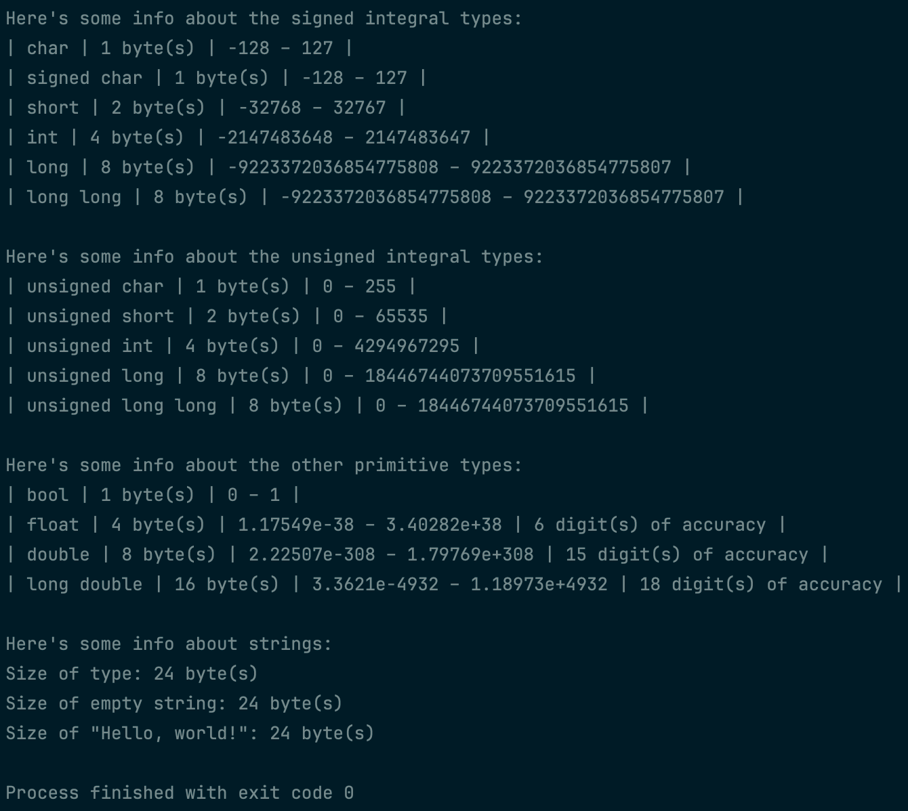

The Bugg brothers were super thankful for your help with their inventory system! They think they have a handle on everything, but Kant D. was wondering what the actual difference was between the primitive data types. He noticed his brothers trying some new types, and he wasn’t sure what they were all about, so he just used the ones he knew, but he was wondering when each type should be used since he wants to make sure he’s always using the right types.
Put together a project which outputs information on each primitive type! This should include how many bytes of memory each type requires; the minimum and maximum values that can be stored in each type; and the number of accurate digits for floating-point types, since Kant D. remembers his brothers making a big deal about making sure to use integral types for money to avoid floating-point errors!
He was also wondering what’s up with strings, since they seem to be different from the rest. Make sure to include some info about why strings are special!
 Program output.